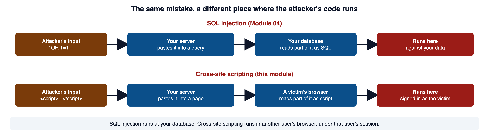
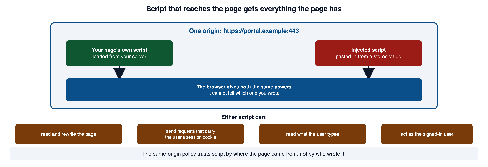
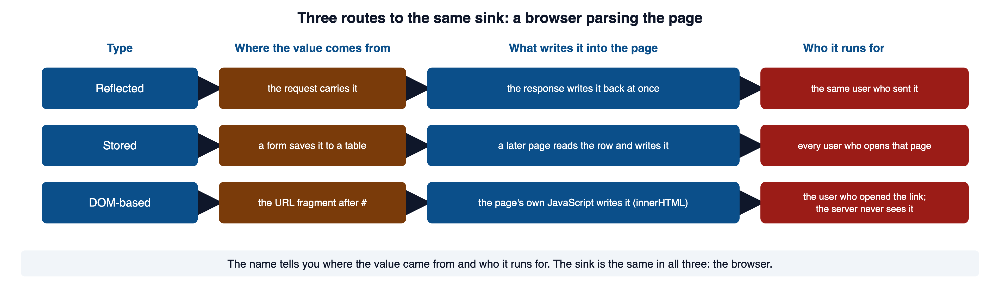
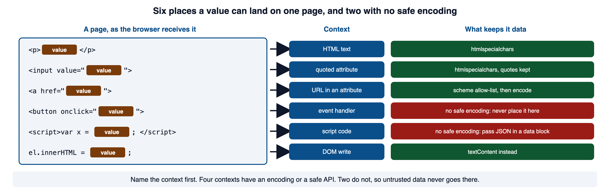
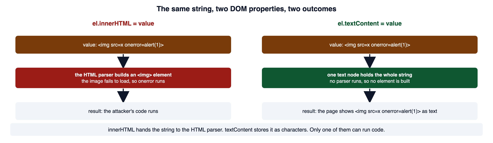
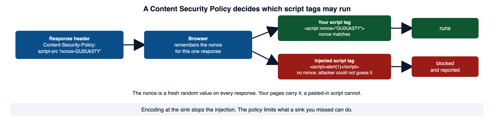

A staff member writes a note that another person later views. The application must preserve the note’s text while controlling how the browser interprets it. This module examines stored, reflected, and browser-side output paths and the defenses appropriate to each.
Read this page with your course environment open, so you can type each example into a small PHP file and watch what it does. Red code blocks show a shape to recognize and never ship. Green code blocks show the pattern to copy.
1Required reading
These two are required reading for the module. This page teaches everything the assignment and the quiz need; the readings give the same material in the industry's own words, which is what a scanner finding, a CVE advisory, or a bug report will use.
- OWASP Top 10:2025 A05 Injection. The category that holds cross-site scripting. It names CWE-79 and says why the category's average impact looks low: the sheer number of XSS reports.
- OWASP Cross Site Scripting Prevention Cheat Sheet. The operative reference for this module. It sets out the output contexts, the places where no encoding helps, the safe DOM sinks, and the controls that only limit damage.
2Cross-site scripting is injection at the browser
Module 01 section 5 gave you the words: a source is where untrusted data enters, a sink is where it reaches an interpreter, and injection is the interpreter reading part of that data as a command. Module 04 section 2 listed the sinks in PHP, and one row was echo into a page, where the interpreter is the browser. This module is that row.
Cross-site scripting (CWE-79) is injection where the interpreter is the HTML and JavaScript parser inside a user's browser. The browser receives one stream of text. It cannot tell which characters you wrote and which an attacker wrote. If the attacker's characters look like a tag or a script, the browser treats them as one.
Here is the shape at its smallest. The search term comes from the query string and goes straight into the page.
<?php
// WHY: Raw request text contributes HTML markup to the heading rather than being displayed as literal text.
$term = $_GET['q'] ?? '';
echo '<h2>Results for ' . $term . '</h2>';Vulnerable. Why: Raw request text contributes HTML markup to the heading rather than being displayed as literal text.
Request that page with a script element in q, and this is the exact response the server sends. The Response block is what curl -s -i printed for the request.
HTTP/1.1 200 OK
Content-type: text/html; charset=UTF-8
<h2>Results for <script>alert(document.domain)</script></h2>Module 03 section 6 taught the repair: htmlspecialchars with ENT_QUOTES | ENT_SUBSTITUTE and 'UTF-8', at the moment the value is written.
<?php
// WHY: HTML encoding represents special characters as data at the HTML output location.
$term = $_GET['q'] ?? '';
echo '<h2>Results for ' . htmlspecialchars($term, ENT_QUOTES | ENT_SUBSTITUTE, 'UTF-8') . '</h2>';Secure. Why: HTML encoding represents special characters as data at the HTML output location.
HTTP/1.1 200 OK
Content-type: text/html; charset=UTF-8
<h2>Results for <script>alert(document.domain)</script></h2>The browser now reads < as the character < and shows it. No script element exists.
What changes in this module is where the attacker's code runs. In SQL injection it ran against your database. In cross-site scripting it runs in another person's browser, under that person's session.

Open full-size image (opens in a new tab)CWE-79: Improper Neutralization of Input During Web Page Generation ('Cross-site Scripting') is the formal entry. Its description says the product does not neutralize user-controllable input before it is placed in output that is served as a web page to other users. MDN: Cross-site scripting (XSS) describes the same attack from the browser's side: a site is made to execute code as though it were part of the website.
3Why the browser makes it dangerous
One browser rule explains the stakes.
The policy decides trust by where the page came from. Script that arrives in your page is script from your origin, no matter who wrote it. The browser gives it the same powers it gives the script you wrote.

Open full-size image (opens in a new tab)Those powers are the ones Module 01 section 6 described. The session cookie travels automatically with every request to the origin. Injected script can send such a request, and the browser attaches the cookie out of habit. The script can also rewrite the page, read what the user types into it, and read the page contents.
MDN: Same-origin policy defines the origin as the scheme, host, and port tuple and lists what the policy restricts. OWASP: Cross Site Scripting (XSS) says the browser has no way to know the script should not be trusted, and that the script can access cookies, session tokens, and rewrite the page.
4Reflected, stored, and DOM-based
The three names describe where the value comes from and who it runs for. The sink is the same in all three: a browser parsing the page.

Open full-size image (opens in a new tab)Reflected
Section 2 was the reflected case. The request carried the value in q, and the response wrote it back. It reaches a victim through a crafted link, so each victim has to follow that link.
Stored
The application saves the value and writes it into a page later. A product review, a profile field, a support ticket, a filename, or a User-Agent header shown in an admin log can all be the storage point.
<?php
// WHY: Storing text in a database does not make it safe to insert into HTML without encoding.
// $review was read back from the reviews table. A customer typed it
// last month, and it was stored exactly as sent.
echo '<p class="review">' . $review['body'] . '</p>';Vulnerable. Why: Storing text in a database does not make it safe to insert into HTML without encoding.
<p class="review">Great kettle <img src=x onerror=alert(1)></p>No <script> tag is in that payload. The browser builds an <img> element, the image fails to load, and the onerror handler runs. A filter that looks for the word script never sees a problem.
<?php
// WHY: HTML encoding represents special characters as data at the HTML output location.
echo '<p class="review">' . htmlspecialchars($review['body'], ENT_QUOTES | ENT_SUBSTITUTE, 'UTF-8') . '</p>';Secure. Why: HTML encoding represents special characters as data at the HTML output location.
<p class="review">Great kettle <img src=x onerror=alert(1)></p>Stored XSS fires for every viewer who loads the page, with no action on their part. That makes it the type the OWASP testing guide calls the most dangerous.
DOM-based
Here the server may deliver a perfectly encoded page, and the page's own JavaScript creates the hole after loading. The value comes from a browser-side source such as location.hash, the part of the URL after #.
const tab = location.hash.slice(1);
document.querySelector('#panel').innerHTML = tab;Vulnerable. Do not use this pattern.
A link ending in #<img src=x onerror=alert(1)> makes the script write that markup into the panel. The browser parses it, and the handler runs.
The server never sees the value. The fragment is not part of the request. Here is the same reflected page from section 2, requested with a fragment on the URL. The response shows that only hi arrived.
curl -s -i 'http://127.0.0.1:8765/search.php?q=hi#<img src=x>'HTTP/1.1 200 OK
Content-type: text/html; charset=UTF-8
<h2>Results for hi</h2>The OWASP community page draws the line as server XSS, where the untrusted value is in the HTTP response, and client XSS, where an unsafe JavaScript call updates the DOM. DOM-based XSS is client XSS whose source is in the DOM.
OWASP: Types of Cross-Site Scripting defines the three types and the server-versus-client split used above. RFC 3986 section 3.5 says the fragment is separated from the URI before dereference and handled solely by the user agent, and RFC 9110 section 7.1 says the target URI of a request excludes the fragment. MDN: Location: hash documents the property the vulnerable script reads.
5Where a value can land on a page
Module 03 section 7 taught you to find every sink on a page and name the interpreter at each one. Module 03 section 6 gave the encodings: htmlspecialchars for HTML text and quoted attributes, URL-encode then HTML-encode for a URL in an attribute, and json_encode with the JSON_HEX_* flags in a data block for data a script needs. This section adds the places where no encoding helps.

Open full-size image (opens in a new tab)| Where the value lands | Context | What keeps it data |
|---|---|---|
| between tags | HTML text | htmlspecialchars with ENT_QUOTES, ENT_SUBSTITUTE, 'UTF-8' |
| inside a quoted attribute | HTML attribute | the same call, and keep the quotes |
in href or src | URL in an attribute | check the scheme first, then encode |
in onclick, onerror, or any on... attribute | event handler | no safe encoding; never place it here |
as code inside <script> | script code | no safe encoding; pass JSON in a data block |
assigned to innerHTML | DOM write | textContent instead (section 6) |
Quoted attributes
Module 03 section 7 said an unquoted attribute ends at the first space. Here is what that costs. The value is x onmouseover=alert(1), encoded with htmlspecialchars both times.
<input value=x onmouseover=alert(1)>
<input value="x onmouseover=alert(1)">The first line has a new attribute, and it is an event handler. The encoding ran and changed nothing, because the value has no <, >, &, or quote. The second line is one attribute holding one string. Quote every attribute.
URLs and the javascript: scheme
A URL in href crosses two interpreters: the HTML parser, then the URL parser. HTML encoding handles the first. It does nothing about the second, because a javascript: URL contains nothing that htmlspecialchars changes.
<?php
echo htmlspecialchars('javascript:alert(1)', ENT_QUOTES | ENT_SUBSTITUTE, 'UTF-8');javascript:alert(1)For a "return to" link that should only ever point inside your own site, accept only a path that starts with /, and reject anything with a scheme or a host.
<?php
// WHY: HTML encoding represents special characters as data at the HTML output location.
function safe_next(string $next): string
{
$parts = parse_url($next);
// Reject a malformed URL, and anything that names a scheme or a host.
if ($parts === false || isset($parts['scheme']) || isset($parts['host'])) {
return '/';
}
// Keep only a path that starts at the site root.
if ($next === '' || $next[0] !== '/') {
return '/';
}
return $next;
}
$next = safe_next($_GET['next'] ?? '/');
echo '<a href="' . htmlspecialchars($next, ENT_QUOTES | ENT_SUBSTITUTE, 'UTF-8') . '">Continue</a>';Secure. Why: HTML encoding represents special characters as data at the HTML output location.
Here is what safe_next returns for five inputs.
/account?id=7 -> /account?id=7
javascript:alert(1) -> /
https://evil.example/ -> /
//evil.example/x -> /
account.php -> /When the link must point to another site, allow http and https only, which is the rule the OWASP cheat sheet gives. parse_url is not a validator. It breaks a string into parts, and it may return false for a badly formed one, which is why the code checks for false first.
Event handlers
<?php
// WHY: An inline event handler mixes HTML and JavaScript contexts, allowing supplied text to change executable code.
$accountId = $_GET['id'] ?? ''; ?>
<button onclick="open_account('<?= $accountId ?>')">Open</button>Vulnerable. Why: An inline event handler mixes HTML and JavaScript contexts, allowing supplied text to change executable code.
The value lands inside JavaScript code that the browser compiles when the button is clicked. HTML attribute encoding does not make it a string again. The cheat sheet says this plainly: attribute encoding alone does not protect JavaScript in an event-handler attribute. Put the data in a data- attribute, which is an ordinary quoted attribute, and read it from a script with addEventListener.
<?php
// WHY: HTML encoding represents special characters as data at the HTML output location. $accountId = $_GET['id'] ?? ''; ?>
<button class="open" data-account="<?= htmlspecialchars($accountId, ENT_QUOTES | ENT_SUBSTITUTE, 'UTF-8') ?>">Open</button>
<script>
document.querySelector('button.open').addEventListener('click', function (event) {
open_account(event.currentTarget.dataset.account);
});
</script>Secure. Why: HTML encoding represents special characters as data at the HTML output location. $accountId = $_GET['id'] ?? ''; ?>
Code inside a script block
The same rule covers a value pasted into <script> as code. Module 03 section 6 gave the pattern: json_encode with the JSON_HEX_* flags, written into a <script type="application/json"> data block. A type that is not a JavaScript type makes the browser treat the content as data it does not run, and your script reads it with JSON.parse. Here is what the hardened json_encode does to a value built to close the block early.
{"tab":"<\/script><script>alert(1)<\/script>"}No < or > survives, so no </script> exists for the parser to find.
MDN: javascript: URLs confirms that a javascript: URL executes when the browser navigates to it and that its use is discouraged. PHP Manual: parse_url documents the keys the function returns, the false result, and the warning that it does not validate. MDN: script type attribute confirms that a non-JavaScript type makes the content a data block the browser does not run. W3Schools: PHP htmlspecialchars has a live editor for the five characters it converts.
6DOM sinks and the safe DOM API
A DOM sink is a JavaScript property or function that hands a string to the HTML parser or the JavaScript engine. The same source-to-sink shape from Module 01 applies, with the whole flow inside the browser.
The one that matters most is innerHTML. It hands the string to the HTML parser, and the parser builds whatever elements it finds.

Open full-size image (opens in a new tab)const tab = location.hash.slice(1);
document.querySelector('#panel').innerHTML = tab;Vulnerable. Do not use this pattern.
const tab = location.hash.slice(1);
document.querySelector('#panel').textContent = tab;Secure. This is the pattern to copy.
textContent is correct when the value is text, which is nearly always. When a script must build structure, create the elements with document.createElement, set their text with textContent, and attach them with appendChild. Never pass an untrusted value to eval, to setTimeout with a string argument, or to new Function; each one compiles the string as code.
OWASP DOM based XSS Prevention Cheat Sheet lists the sinks above and names textContent as the safe assignment property. MDN: Element.innerHTML documents the <script> exception, the <img onerror> example, and the advice to use textContent for plain text. MDN: Node.textContent says setting it replaces the children with a single text node. W3Schools: textContent and W3Schools: innerHTML have live editors for both properties.
7Encoding is not sanitization
Encoding is right when the page should display text. Some features must display a limited set of markup: a formatted article, a rich-text comment. Encoding there shows the tags instead of rendering them, which breaks the feature.
The tempting shortcut is a regular expression that removes the dangerous parts.
<?php
// WHY: Removing selected script tags leaves other executable HTML forms and can create new syntax by joining remaining text.
$body = '<img src=x onerror=alert(1)> and <scr<script>ipt>alert(2)</script>';
$clean = preg_replace('#<script.*?>.*?</script>#is', '', $body);
echo $clean, "\n";Vulnerable. Why: Removing selected script tags leaves other executable HTML forms and can create new syntax by joining remaining text.
<img src=x onerror=alert(1)> and <scrThe pattern removed a script element and left the <img> payload untouched, because the payload never contained the word it was looking for. It also damaged the text around the match.
Do not strip tags on the way in as a substitute for encoding on the way out. A rep who writes price was < 500 loses part of the sentence, and the stored value is still unsafe the next time another page writes it without encoding. Store what the user sent, after validation, and encode at each sink.
DOMPurify describes itself as a DOM-only XSS sanitizer for HTML, MathML, and SVG, and the OWASP cheat sheet recommends it for sanitization and says to keep it patched. WHATWG HTML: parse errors states that the specification defines the parsing rules for documents whether they are syntactically correct or not, which is why a browser builds a tree from markup a filter did not recognize.
8Content Security Policy, an introduction
Everything above repairs the sink. A large application will still miss one someday. A Content Security Policy reduces what a missed sink costs.
The strict form uses a nonce: a random value the server makes fresh for every response. The header names it, and every script tag you wrote carries it. A script tag an attacker pasted in cannot carry a value the attacker never saw.

Open full-size image (opens in a new tab)<?php
// WHY: Cryptographic random bytes avoid predictable values for security-sensitive identifiers.
// A fresh, unguessable nonce for this one response.
$nonce = base64_encode(random_bytes(16));
// header() must run before any output.
header(
"Content-Security-Policy: " .
"script-src 'nonce-$nonce'; " . // only script tags carrying this nonce run
"object-src 'none'; " . // no plugin content
"base-uri 'none'" // no <base> tag rewriting relative URLs
);
?>
<script nonce="<?= $nonce ?>">
document.querySelector('#panel').textContent = location.hash.slice(1);
</script>Secure. Why: Cryptographic random bytes avoid predictable values for security-sensitive identifiers.
The header the browser receives looks like this; the nonce changes on every response.
Content-Security-Policy: script-src 'nonce-GU0Uk37Yjyxw7GDNuTSeuw=='; object-src 'none'; base-uri 'none'Two settings weaken a policy badly. 'unsafe-inline' allows every inline script, which is the thing XSS injects, so MDN says to avoid it. A long allow-list of hosts is the older style and is easier to bypass than a nonce. The 'strict-dynamic' keyword extends trust from a nonced script to the scripts it loads, which is how a nonce policy works with script bundles.
A policy can be rolled out without blocking anything. The Content-Security-Policy-Report-Only header reports violations and enforces nothing, which lets you find what the policy would break before you turn it on. The full set of directives, hashes, and the reporting setup are out of scope for this module.
MDN: Content Security Policy (CSP) is the source for the header, the nonce mechanism, the warning on 'unsafe-inline', and report-only mode. MDN: CSP script-src confirms that a nonce must be unique per response, what 'strict-dynamic' does, and that the directive covers inline event handlers. MDN: Content-Security-Policy-Report-Only documents the report-only header. OWASP Content Security Policy Cheat Sheet gives the strict policy and says CSP is a second layer. PHP Manual: header says header() must be called before any output.
9Cookie attributes limit the damage
Cookie attributes are a second layer of the same kind. They change what a successful injection can reach, and they prevent nothing.
HttpOnlyforbids JavaScript from reading the cookie throughdocument.cookie.Securesends the cookie only overhttps:.SameSitecontrols whether the browser sends the cookie with a request that comes from a different site.
Validation keeps its role from Module 03. It narrows what a field accepts. A valid value can still contain < or &, so validation is never the primary XSS defense; encoding at the sink is.
MDN: Set-Cookie documents all three attributes and states that an HttpOnly cookie is still sent with JavaScript-initiated requests.
10Confirm the fix
Module 03 section 10 gave the two-test rule for encoding: hostile markup arrives inert, and a legitimate special character still displays. Cross-site scripting adds tests for each route and each context.
| Test | Before the fix | After the fix |
|---|---|---|
| an ordinary value | shown correctly | unchanged |
| real text with a quote, an ampersand, and an angle bracket | may break the page or drop characters | displayed exactly as typed |
the approved harmless markup, such as <b>test</b> | rendered as HTML | shown as literal characters, for every viewer |
a payload with no script tag, such as <img src=x onerror=alert(1)> | the handler runs | shown as literal characters |
| a stored value viewed by a second test identity | runs for that viewer | inert for that viewer |
| a value in the URL fragment | runs at the DOM sink | assigned as text, does not run |
a javascript: URL placed in a link | runs when clicked | replaced by / by the scheme check |
Look at what the browser receives, not only at what the screen shows. curl -s against the page prints the exact bytes, so you can see <b> in the response rather than guessing from a rendered page.
OWASP Web Security Testing Guide: Testing for Stored Cross Site Scripting is the tester's method for the stored rows, and it names administrators as the viewers to worry about. OWASP Web Security Testing Guide: Testing for DOM-Based Cross Site Scripting covers the fragment row and says the payload after # is not sent to the server.
11Common misconceptions
✕"Stored content came from our database, so it is trusted."
The original source was untrusted, and storing the value changed nothing. Encode it at output, the same as any other untrusted value.
✕"A Content Security Policy fixes XSS."
A policy limits what runs after a successful injection. Context-aware encoding fixes the flow that allowed the injection. Ship the encoding; add the policy on top.
✕"
HttpOnlymakes XSS harmless."Injected script can still rewrite the page, read what the user types, and send same-origin requests that carry the cookie, none of which requires reading the cookie.
✕"Removing the word
scriptis enough."XSS has many vehicles:
onerrorand other event handlers,javascript:URLs,<img>and<svg>tags, and DOM sinks that never involve a tag in the response at all.✕"HTML encoding works everywhere."
Each context has its own grammar. HTML encoding does nothing to a
javascript:URL, and it does not turn code inside an event handler back into data.✕"
innerHTMLis safe because inserted<script>tags do not run."An
<img>withonerrorruns. UsetextContentfor text.✕"The PHP page is fully encoded, so the application is safe."
DOM-based XSS runs in the browser, and the server never sees the fragment. Read the JavaScript too.
✕"Validation prevents XSS."
A valid value can still contain
<or&. Validation narrows the input; encoding at the sink is the defense.
12Check your understanding
Work these before you look at the answers.
- In the reflected example, what does the browser do with a
<script>element that arrived in$_GET['q'], and why does encoding the output change the result? - Why does stored XSS usually reach more people than reflected XSS, and which viewer is the highest-value target?
- A PHP page is fully encoded and the application is still vulnerable. What kind of XSS is it, and where must the fix go?
- Why can the same value be safe in HTML text and dangerous in an
hrefattribute, and what extra step does a URL need? - Why is
htmlspecialcharsthe wrong tool for a value placed inside a<script>block or anonclickattribute, and what do you do instead? - When is
textContentpreferable toinnerHTML, and what makes it safe rather than a convention? - What does a Content Security Policy contribute after the sink has been encoded, and why is it not the primary fix?
- An
HttpOnlycookie cannot be read by injected script. Name two things the script can still do. - Which is the stronger defense: stripping the word
scriptfrom input, or safe APIs with context-aware encoding? Why? - What two things must a passing fix test show at the same time?
Answers: (1) it opens a script element and runs it, because nothing marked those characters as text; encoding writes < and > as < and >, so the browser shows them. (2) a stored payload fires for every viewer who loads the page with no action from them, while a reflected one needs each victim to follow a crafted link; an administrator viewing user-supplied values is the target worth having. (3) DOM-based XSS; the fix goes in the client-side JavaScript at the DOM sink, because the server never sees the value. (4) HTML text and a URL are read by different parsers, and a javascript: scheme contains nothing HTML encoding changes; check the scheme against an allow-list before writing the value. (5) both places are script contexts, so a value there is code and no HTML encoding turns it back into data; pass it as JSON in a data block or in a data- attribute and read it from a script. (6) whenever the value is text; textContent stores the string as one text node and never runs the HTML parser, which is a property of the API. (7) it stops an injected script from executing even after a sink was missed, and it can report the attempt; it is not primary because it does not repair the flow and a weak policy protects little. (8) send same-origin requests that carry the cookie, rewrite the page, and read what the user types. (9) safe APIs with context-aware encoding, because a deny-list misses every vehicle it did not name, such as onerror, while encoding for the context makes any value data. (10) the injected markup is inert, and legitimate content with special characters still renders correctly.
13References and further study
The two required readings in section 1 and the pages linked through the lecture are the main references. Each entry below names what it confirms.
- CWE-116: Improper Encoding or Escaping of Outputcwe.mitre.org
The encoding weakness shared with Module 03, behind every context in section 5. Its first example is an unencoded parameter that allows XSS.
- PHP Manual: htmlspecialcharsphp.net
Confirms the five characters converted,
ENT_QUOTES, and thatENT_SUBSTITUTEprevents the empty-string result on invalid bytes, as sections 2, 4, and 5 use it. - PHP Manual: json_encodephp.net
Confirms that the
JSON_HEX_*flags write<,>,&, and the quotes as\uXXXXescapes, which is the data-block output in section 5. - OWASP Web Security Testing Guide: Testing for Reflected Cross Site Scriptingwstg.owasp.org
The tester's method for the reflected rows of the table in section 10.
Videos.